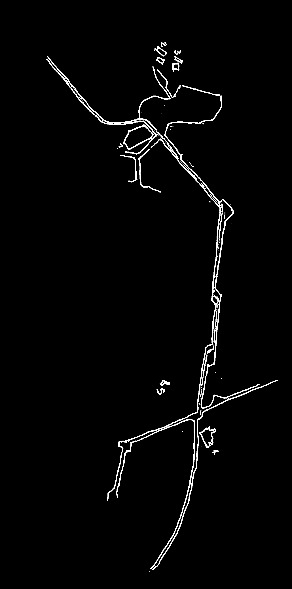
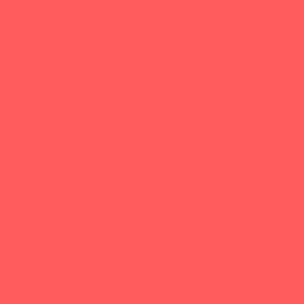
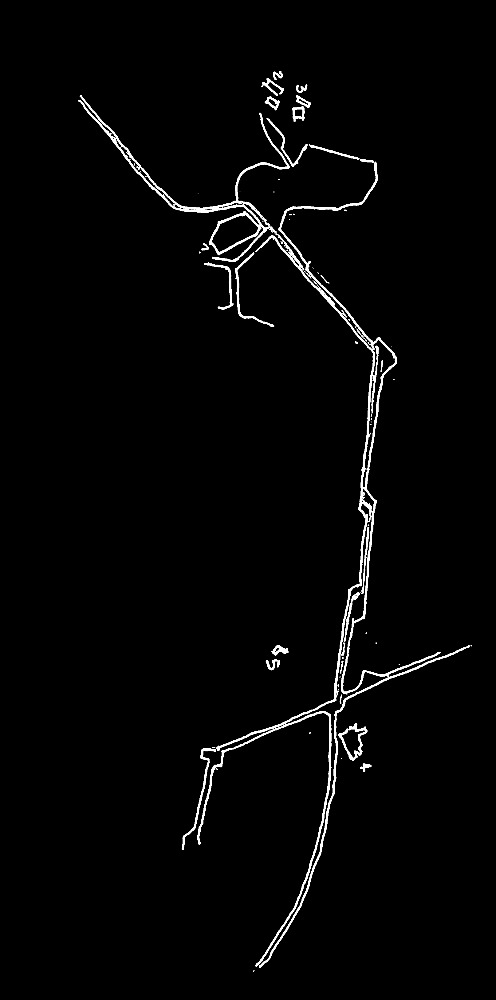
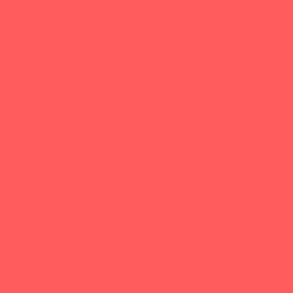

Recorrido de límites contrastados atravesados por la gradualidad
Mantos de Gea
Los Mantos de Gea en los talleres de Diseño Gráfico
Se inicia un recorrido dentro de la planta baja de la ciudad abierta, en donde se utilizan como guías del mismo una serie de elementos fabricado como arquitectura del lugar, presentando puntos claves.
Se presenta un recorrido en el cual su trascurso se basa principalmente en la gradualidad, vale decir, el pasar a través de etapas compuestas por diferentes elementos naturales y contruidos. Durante el primer tramo de este pasar se utiliza como puntos donde el inicio es la entrada a la ciudad abierta y el punto de término es la hospería de la entrada.
Se trae a presencia lo a través del acuarela y el pincel como representante de lo natural. Dentro de ello se observa como es aquel paso generador de totalidades. En éste primer tramo se presenta mayormente naturaleza como recepción al lugar; donde el pasar se presenta como un contraste difuso como luz que permite cambiar de plano donde hay una nueva capa en la cual la distancia se presenta como un cambio de intensidad.
Dirigidos por los profesores Claudio Girola I. y Godofredo Iommi M., durante los años 1981 - 1983.
Las ilustraciones de este cuadernillo tienen dos características distintas:
a. Las fotografías en blanco y negro dan cuenta en forma documental de los elementos con que se construyeron los ámbitos de las "magnitudes en fuga" o bien el ámbito mismo de estos.
b. Los dibujos fotográficos o impresos a color corresponden a una re-creación de las "magnitudes en fuga"; tanto del taller que trabajó en la observación de los "suelos" y finiquitó su etapa construyendo el "Manto de Gea", como del taller que trabajó en la observación del "fuego" y terminó su etapa construyendo "La Sala negra del Fuego".
Durante los años 1981-83 los talleres de Diseño Gráfico que estuvieron bajo nuestra tuición trabajaron de otra manera que la habitual hasta ese entonces.
Lo importante fue, por intermedio de ellos, cuestionarnos los fundamentos corrientemente aceptados por la gráfica en el mundo. Entre ellos, el más importante: LA ESENCIA DEL DECIR GRAFICO ES LO "LOGOTIPICO".
¿Qué son los "Mantos de Gea"?
El carácter de axiomático da a toda definición la suficiente generalidad como para permitir volver una y otra vez a ella desde situaciones más específicas. Es de esta manera que el objetivo y objeto que nos proponemos señalar se irá mostrando. Lo concluso que todo axioma expresa, es decir, la no necesidad de explicación del principio implicado en el mismo, diseño el "todo", pero en nuestro caso ese "todo" que contiene la respuesta no pretende ni desea ser entendido como una figura de perímetros pre-determinados.
Se comenzó a desarrollar en estos talleres de gráfica la observación de "las aguas", de los "suelos" y últimamente del "fuego". El esfuerzo radicaba en que la observación dibujada no tuviera nunca el carácter de copia del natural sino que se volviera en "si mismo" de lo observado para tratar de "traerlo a presencia". Esta expresión contiene "in nuce" el propósito último del giro que realizábamos en esos talleres. Más adelante nos explayaremos sobre el sentido que le hemos dado a la expresión "traer a presencia".
Se presenta un segundo momento o tramo del recorrido tomando como punto de referencia cada construcción donde el punto de inicio la Hospedería de la Entrada y como final el Taller del Escultor. La distancia física entre éstos puntos es mucho menor por lo que más que un punto de finalización se considera parte de un nuevo espacio en el cual esta construcción forma parte y da paso continuo donde junto con la siguiente construcción envuelves un espacio de la ciudad abierta. Éste nuevo espacio se visualiza como espacio de espera donde el tiempo aparece dirigido por y dominado por el ser humano y su arquitectura. Es parte de un lugar donde la intercalación de tiempos en el recorrido se hace presente a través de una envoltura compuesta por naturaleza.
Todo estaba dirigido y orientado a alcanzar algunas palabras gráficas propias que le permitiera al alumno penetrar más allá de la construcción del "mundo como paisaje", es decir, desde un punto de partida de "mundo" como "nuevo cristal" [4] y no un mero desarrollo de lo natural. En clase dijimos a este respecto: "Hemos hecho un giro en diseño gráfico. Es de ahí, de ese giro, de donde vamos a sacar fuerzas para poder hacerlo. Tenemos una proposición, no un dogma, una proposición a partir del texto de "Eneida-Amereida". La proposición contiene un intento, y este es el de salirse del cuadro que hemos seguido en los años anteriores, cuya característica es que indica algo que no es "si mismo". Un afiche, por ejemplo, es una señal que indica otra cosa que no es "si mismo". Hasta la propia ordenación de un libro trata, calculadamente o improvisadamente, de "poner en escena" el contenido del texto. Nosotros intentamos hacer un cambio para lograr que el diseño gráfico "presente", es decir, que no tuviera como arquetipo el "logo", fuera de sí, sino que prevaleciera su propio valor intrínseco. Muestre lo que quiere mostrar. Este punto hay que tenerlo siempre presente. Es la regla de oro con que hay que trabajar. Veamos algo antes a propósito de la observación: uno se coloca, por ejemplo, frente a la roca o al suelo; mira y dibuja. ¿Qué observación hay en ese dibujo? ¿Qué es lo que se observa? Observar es algo más que dibujar. Ciertamente que hay que tener muy claro, es decir, muy "adelante" lo que se está viendo, pero todavía no se observa nada hasta el momento que ME PLANTEO la relación que tendrá el perímetro de esa figura con el perímetro de tal o cual elemento que la integra. ¿Qué queremos decir con esto? Queremos decir que hay que aguzar el ojo para IR MAS ALLA del buen dibujo; para que este TRAIGA la observación. Entonces el dibujo va a ser siempre "original" y se va a calar de esta manera gráficamente lo que se está mirando..."
Queríamos significar, seguimos creyendo que no hay otro camino, lo imprescindible que es ejercitar el ojo "inocente" y que hay que partir VIENDO COMO SI NO SE SUPIERA LO QUE SE ESTA VIENDO, de lo contrario sucede que lo que se está VIENDO se "lo tiene dibujado" anticipadamente por lo que se sabe y no por lo que se VE. De no ser así, lo que sucederá indefectiblemente, es que el dibujo será siempre una imagen pre-concebida, y por tanto, convencional. Si rigurosamente se ejercita el ojo "inocente" todo es cuestionable. Aun la relación entre las formas y la relación de situar esas formas dibujadas sobre el papel. Negarse siempre a la pre-formación o a su opuesto, la de-formación. Hay que buscar el punto en que lo OBVIO quede de lado. Hay que saber olvidar o que se sabe. Si no fuera así imaginemos lo contradictorio que sería, por ejemplo, un escultor que modela o esculpe un desnudo. Es obvio que la escultura desde hace siglos hace desnudos. ¿Qué puede hacer, entonces, un escultor hoy día? ¿Qué puede VER en un desnudo? Sólo podrá HACER VERDADERA ESCULTURA SI NO SABE NADA de desnudos y aún, sí fuera el caso, de tener un modelo para su estatua NO la tendrá para copiarlo.
Pero reparemos ahora dos momentos importantes a propósito de lo dicho sobre la "observación". El primero de ellos es el momento de plantearse, en otras palabras, interrogarse sobre la relación de tal cosa con tal otra cosa. Ese "me planteo", ese planteamiento es lo imprescindible de toda actitud rigurosa ante la cosa. No es la "cosa observada" la que se "plantea" nada sino que ella "da" al que tenga la mirada aguzada la posibilidad de "plantearse" algo que va más allá del buen dibujo. Es decir, más allá de las naturales o educadas dotes, poder interrogar la incógnita abierta justamente para no ver sólo la cosa en su actualidad sino en su FORMA INOCENTE. Esa forma inocente es la construcción que arrojará un "nuevo cristal" y no las infinitas variaciones de cualquiera de los tributos de la cosa observada.
Ésta construcción como punto de término del tiempo del espacio del hombre y paso a la naturaleza nuevamente, tal como el recibimiento a la entrada de la ciudad abierta. Durante este espacio se observa uhn acoger de forma de envoltura circular donde ocurre el aparecer de los tres planos dominados por la naturaleza en conjunto con el nuevo plano donde aparece lo construído.
En los planos que aparecen durante el recorrido se observan diferentes luces que hacen visible cada plano como capa, pero que juntas forman la totalidad. La primera de ellas es una capa definida como una claridad de la imagen donde aparece el detalle del tramo, ya sea natural o construído; la segunda capa está formada por una luz que la llamaremos como aquella que permite la identificación del objeto pero con un nivel de detalle menos a la anterior por lo que se trabaja con una menor opacidad. Por útima capa es auqella que consideramos como finalización de la visiblidad, donde aquello que se nos presenta se ve como conjunto de lo que podemos llamar un tercer plano como fondo, donde la claridad de la imagen no posee ningún tipo de detalle.
El segundo momento es el siguiente. Lo que "tiene que estar" en el dibujo nunca será alegoría ni símbolo. Cuando alguien observa realmente (y esto es lo que significa "mirada") aparecerá el ritmo de lo observado, eso es lo que "tiene que estar" en el dibujo.
La disputa se entabla entonces para nosotros entre esas concepciones y nuestras carencias. Ellos construyeron la profundidad, una vez como símbolo y otra vez como "punto de fuga" o perspectiva. ¿Cómo hacer que la profundidad de nuestra dilatada extensión no fuera vista como paisaje? Porque esa es la herencia, el símbolo y la perspectiva vieron la extensión como paisaje. ¿Es cierto que nuestra extensión la vemos como paisaje o no será que la vemos por lo que sabemos? Una posible pista para poder comenzar a pensar dentro de esta disputa es lo que señala Alberto Cruz en su cuadernillo "Punto de Vista"; hablando sobre los mantos de Gea: "un recorrido conducido por la disposición y los elementos, vamos no en la expresión de las verdaderas magnitudes, sino en la expresión de las magnitudes en fuga"...
Las "magnitudes en fuga" las entendemos como algo distinto al "punto de fuga". Este fue la gran invención del renacimiento y será para siempre la construcción figurativa de la profundidad de la extensión. La "magnitud en fuga" no es la maquette de algo que tendrá otro tamaño, sino que su tamaño tiene lo "grande" no referido a su "dimensión" sino a su naturaleza, es decir, a su ser en sí mismo.
Este "ensimismamiento" lo da solamente aquella clase de visión que lleva consigo la propia semejanza y que buscaba con las líneas, con los trazos, con los colores o los volúmenes, con lo que fuere, rechaza todas las demás cosas que aparecen como conclusas de forma distinta a lo buscado.
Para el que posee mirada aguzada, esa forma "futura" es la que existe en el presente de su visión, puesto que abstraer es sustraer de las búsquedas las cosas conclusas o con posibilidades conocidas de conclusión.
Por ello es que dibujar o filmar los suelos, los horizontes y los cielos o bien realizar los "mantos de Gea" en las salas de la Escuela, sin punto de fuga es poder acceder a una naturaleza de tal cualidad, dicho de otro modo, hacer una naturaleza agregada a la naturaleza, sin "indicarla" ni "representarla", sino revelándola por lo que no muestra a simple vista: su abstracción y ésta como "enrarecimientos de la determinación y de la indeterminación" [6].
Estos enrarecimientos fueron tratados, dentro de los talleres, como "re-lectura" de la aparición de "lo aparecible" de las cosas y de los elementos como el agua, el suelo, la tierra, el cielo, el fuego. ¿Qué queremos decir con "re-lectura"? Pensamos en que no podemos dejar de leer, puede decirse que somos una lectura que no cesa, permanente. No somos más que una "lectura". La pregunta se precipita sobre esta idea: ¿Pero qué leemos?. No sólo letras y palabras, esa es una de las formas de "lectura". Leemos lo que APARECE siendo a la vez APARECIENTES. No somos algo distinto en el sentido de que lo "otro" aparece y nosotros no. Pero sí poseemos una peculiaridad, una suerte de DISTANCIA, que nada tiene que ver con quiebres, rupturas o contraposiciones. Señalamos que lo que HAY es una DISTANCIA, por la cual y en la cual se produce la lectura o viceversa, es decir, podemos pensar que porque somos "lectura" somos "distantes".
Durante el recorrido también encontramos la participación de lo construído como el detalle donde hay una lumninosidad completamente diferente a la de lo natural debido a que el elemento que recibe aquella luz no pertenece a una construcción del medio ambiente, sino que posee una materialidad. Aquella materialidad eselegido por un tercero con alguna finalidad; ésta diferenciación se trabaja a través del trabajo de lo contruído como luz y sombra a través de la línea como elemento gráfico.
El tramo que recorre a llegar a la Hospedería de la Rosa de los vientos es en tiempo de lo natural, donde lo construído aparece como detalle donde no alcanza a construir un tiempo detarminado, es decir, sólo alcanza a aparecer como parte del recorrido de lo natural interrumpido por una leve intervención del hombre. Con ello se logra una fusión entre estos compsitores de la totalidad donde le agrega un nuevo ritmo al espacio natural, sin pasarlo a llevar.
Es necesario definir un poco más eso que hemos llamado "apareciente". Al hacerlo iremos exponiendo las articulaciones específicas con las que hemos comenzado a construir la proposición teórica de una gráfica otra. ¿Qué es lo que "aparece"? Pensamos que antes que nada dos modalidades de la luz, lo oscuro y lo claro, que no son contrapuesto sino que son diferentes. Por ello las llamamos modalidades y no con la forma habitual de afirmación-negación, es decir, luz y no luz. Lo oscuro y lo claro en un permanente "aparecer oculto" que se despliega. Recordemos la "re-lectura" que hicieron los griegos justamente de cuestiones como las señaladas y el despliegue teórico que alcanzaron a constituir. Los griegos, pre-socráticos, economizando, llamaron a la luz y no luz los cuatro elementos. Estos cuatro elementos pensados como "momentos" permitieron imaginar lo "delante", lo "detrás" lo "arriba" y lo "abajo", que también pudieran parecer como contrapuestos cuando en realidad son semejantes. Consecuentemente con lo imaginado les fue posible elaborar la noción de "movimiento", puesto que lo que va hacia "arriba", el caso del fuego, por ejemplo, y llega "allí" es lo "arriba" y lo que va hacia "abajo" y llega "allí" es lo "abajo", como en el caso del agua. Son movimientos que "llegan" y ese "allí" es lo que permite comprender y denominar "arriba-abajo" o "adelante"-atrás". Había un movimiento que no conducía a un "allí". Ese movimiento que no concluye sería un movimiento en sí mismo, perfecto, puesto que es fin y comienzo perpetuo en cualquiera de sus momentos. Lo conocieron y lo llamaron: circular. Este movimiento fue asimilado a los astros, al cielo.
Poder establecer en virtud de estas cosas, es decir, de la suposición del experimento y la construcción en ellos de la verificación de que el principio se cumple, eso es una "re-lectura" de lo que "aparece" desde algo o a partir de algo que no aparece.
Lo que importa no es la realidad de los principios que sustenta el experimento sino que con esos principios lograr los efectos que el mismo predice. En el caso del movimiento uniformemente acelerado no le importa a Galileo verificar que este exista, pero si le importa verificar que en el experimento que lo predice se cumpla.
ESO Y NO OTRA COSA ES LA ABSTRACCIÓN.
Si resumimos la idea de Russel en este párrafo creemos no equivocarnos al decir que lo "observable" es el final de una larga cadena que parte de algo que dista mucho de parecerse a lo "observado"; salvo en su forma "abstracta".
¿Por qué el hombre lee?
Hay dos corrientes de pensamiento que pueden responder esa pregunta. Una de ella es la que dice que el hombre siendo indefenso ante el mundo "natural", ante "lo otro"; se ve obligado a leer para dominarlo, por lo cual se sobreentiende que de lo que se trata en definitiva es de dominar la naturaleza.
Éste es el último punto de finalización del recorrido, donde aquel momento en donde se trae nuevamente el tiempo de los construído dede la Hospedería de la Rosa de los vientos. El espoacio de lo construído es generado principalmente por las distacias físicas entre los objetos, debido a que la distancia entre los mismos aparece en una misma totalidad visible.
En cada plano visible se presenta la gradualidad como transcurso o discurso del recorrido. Se presentan principalmente dos formas de tomar el concepto dentro del discurso; la primera de ellas es como paso de un plano hacia otro donde el cambio de luz y de diferenciación del detalle aparece como contraste. La segunda forma de tomar el concepto de los límites de los contrastes como gradualidad, es el contexto de los tiempos donde se muestra un ritmo entre lo natural y lo constuído como intercalación de uno y otro como contraste, donde durante uno de ellos aparece un detalle que le da un detalle de lo nuevo a través de un toque de lo construído como elemento formador parte del natural.
Esta corriente de pensamiento es mayoritaria. La otra corriente es minoritaria y piensa que no es así de simple la ecuación, sino que la "re-lectura" es en última instancia, gratuita, pero necesaria, libre, pero necesaria. Libre, porque no tiene la finalidad evidente de aquello que aún no aparece y luego aparece.
Es una luz transformante que permite la transformación y que también nos hace, nos convierte en lectura. Estamos tentamos de decir que, al revés, esa luz la llevamos con nosotros o está en nosotros, sin la cual no es posible "mirar". La transformación trae lo "oculto" como "oculto" a la "apariencia".
El agua, por ejemplo, cuando se la junta y se hace una represa se transforma en "energía", eso es el "fuego". La nota preponderante es la transformación o luz transformante que se da en lo más propio del ser humano: en la "lectura" que llamamos "mirada". Por esa "mirada" el agua se hace energía, el carbón, energía, el aire, la energía, la luz del sol, energía. Y por la "mirada" en la química, por ejemplo, se transforma el trigo en pan. Y si dejamos los ejemplos que traen siempre un aire mitológico, está allí la ley clave de la física, la segunda de la termodinámica, la invencible ley de la entropía que perturba la visión de la armoniosa tendencia al orden en toda la naturaleza. La descripción más general que los físicos propenden a dar de las transformaciones en el tiempo a menudo es formulada así: el mundo material pasa de estados ordenados a un desorden siempre creciente, y el estado final del universo será el del máximo desorden. La ciencia moderna sostiene que la naturaleza orgánica e inorgánica tiende a un estado de orden y que las acciones del hombre son gobernadas por la misma tendencia. Por otro lado sostiene que los sistemas físicos evolucionan hacia un estado de máximo desorden. "¿Cuál es la relación entre las dos tendencias cósmicas: hacia el desorden mecánico (principio de entropía) y hacia el orden geométrico (en los cristales, las moléculas, los organismos, etc.)" [7]. Esta pregunta es posible formularla porque se posee "mirada aguzada".
¿Qué significa, por último, poseer "mirada aguzada"? Pensamos que la respuesta no se puede dar por términos simples. No obstante podemos decir que se la posee si se posee capacidad y amor.
Capacidad para estar en el vértice, en el extremo, en la punta de lo que hemos llamado "apareciente" y amor de estar y sentirse colocado en ese vértice o punta de su oficio.